“SEO Manager Module for Prestashop ” Documentation by “Onasus.com ” v2.4.6
“Prestashop SEO Manager ”
Created: 01/12/2012
Updated: 12/02/2015
By: Onasusweb
Email: contact@onasus.com
website: www.onasus.com
Thank you for purchasing our module. If you have any questions that are beyond the scope of this help file, please feel free to email via my user page contact form at Codecanyon.
Or open a ticket at our dedicated support website at http://helpdesk.easyretailmanager.com .
Thanks so much!
Table of Contents
- Introduction
- What Seo Manager is for?
- Installation
- User guide
- System requirement
- Package description
- More information
A) Introduction - top
It is often assumed that to create an online presence for your business, it is sufficient to put together a good-looking design and a content rich website. But what about driving visitors to your website and turn them to regular customers? At the end of the day, this is what matter to you!
Considering that most of your traffic comes from search engines, then you understand that you should expose your website in a way it is easy to Search Engines to discover/expose your content. Then you need to improve your SEO.
Search Engine Optimisation - SEO - is the art of getting your web site to rank on the first page of Google and other search engines, based on its merits. This plugin makes it possible to concentrate the management of meta data of your entire Prestashop online retail store in one place.
Along with your page content, search engines like Google, Bing, Yahoo, Yandex, Baidu - and many more - go through a number of meta tags to find relevant information in order to display your links in the Search Engine Result Pages and to grab your customer attention.
This is where you may find that the Prestashop SEO Manager module is a great support
B) What Seo Manager is for? - top
Prestashop SEO Manager provides a comprehensive tool generate the meta tags for your shop resources in just 1 click!
It helps you to optimize your Prestashop website for organic search results. Maximizing the visibility of your website in organic search results is a continuous process which requires significant involvement and may not provide overnight results. The Prestashop module SEO Manager is your companion and helps you to reduce your effort along this continuous process.
Not only it's probably the best SEO tool of the market, it's also the most affordable and the best seller at Codecanyon since 8 months.
It helps you to increase the SEO of your shop.
<head>
<meta name="description" content="Here is a description of the applicable page">
</head>
Seo Manager can display all the pages that has meta fields in one place, you can manage all the SEO data of your web site in single page:
- Product page
- Categorie page
- Home page
- CMS page
- Manufacturer page
- Supplier page
- Search result page
- Contact form
Features
- Meta tags generator for Prestashop 1.5.x
- Meta tags generator for Prestashop 1.6.x
- Multistore
- Mutli language : translated in English, French, Spanich and German
- built-in shortcodes help hints
- Support Bootstrap 3.
- Fully documented
- Fully supported - helpdesk and forum
- Compatible with all the latest Internet browsers
C) Installation - top
Once you have downloaded SEO Manager from CodeCanyon, follow the standard Prestashop module installation to upload the addon on your Prestashop retail website. Every single step is illustrated in this document.
First, go to the menu "Modules" in Prestashop top menu, then click on the icon "Add a new module" and select the archive seomanager.zip.
if you unzip (decompress) the module archive file and, you may use your favorite FTP software, upload 'seomanager' in your Prestashop /modules folder. You can skip this step.
You will see the page of list of modules. Now you click "Add a new module"
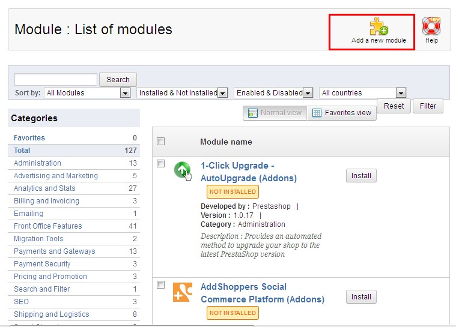
On the "Add a new module" form, please click "Browse..." to select the SEOManager.zip file and click "Upload this module" to upload Module
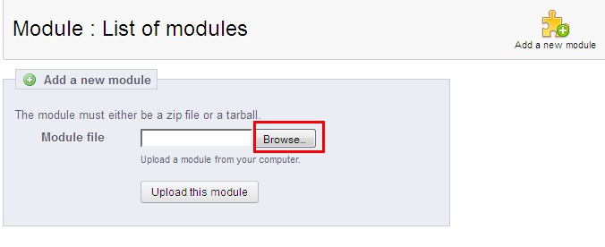
A this stage, the SEO Manager item appears in the list of modules.
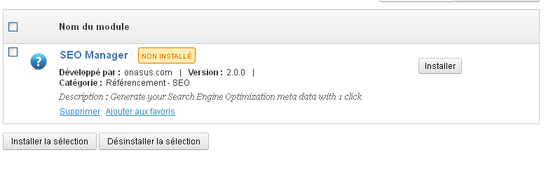
Or use the search form to select the module with the word "seomanager".
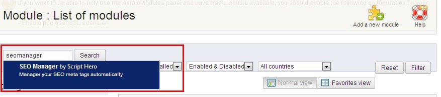
Now, you just click "Install" button to install "SEO Manager" module.
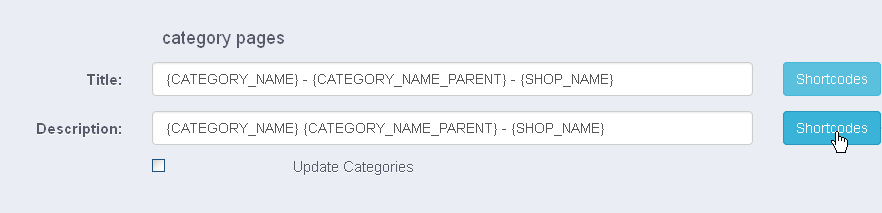
The module "SEO Manager" is now successfully installed:
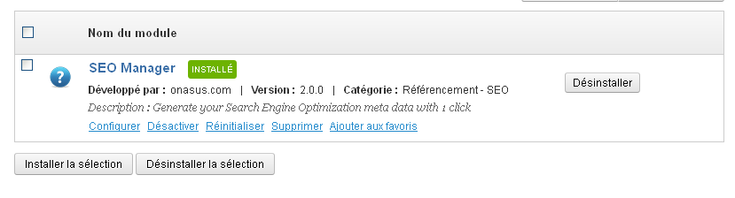
Upgrade process:
The module SEO Manager is updated at a regular basis. It is fairly intuitive to ugrade the module SEO Manager for Prestashop. Follow the previous installation guide, upload the module archive seomanager.zip. Prestashop will update automatically the module. 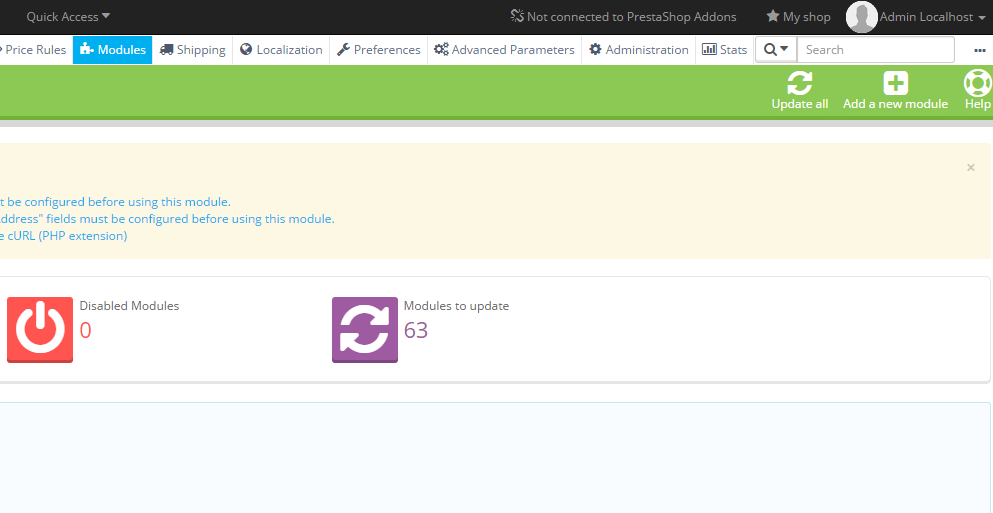D) User guide - top
The SEO Manager for Prestashop 1.5.x helps you to automate the configuration of all the SEO data in one place. Thanks to its easy to use interface, you can populate hundreds of records in just few clicks. Let us start, just click on "Configure" of "SEO Manager".

On the configuration page, you can see all your web pages that come with search engine optimization fields. Edit the input text fields "Title" or "Description" to reflect accurately your content.
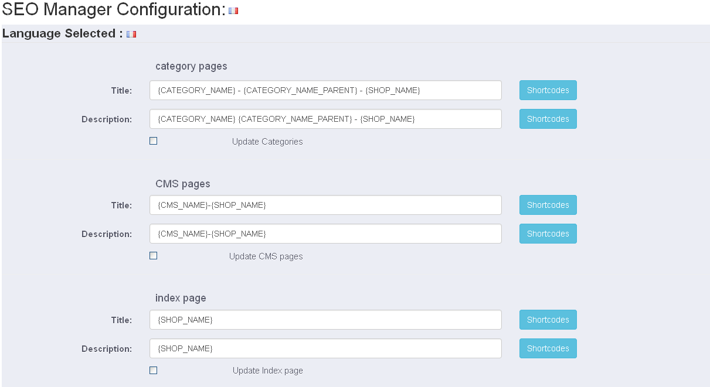
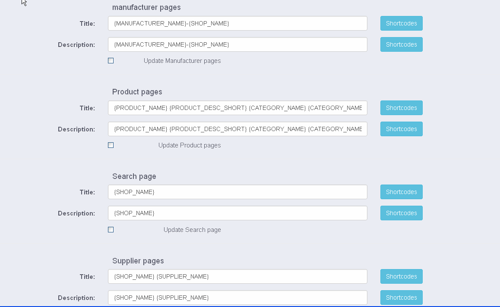
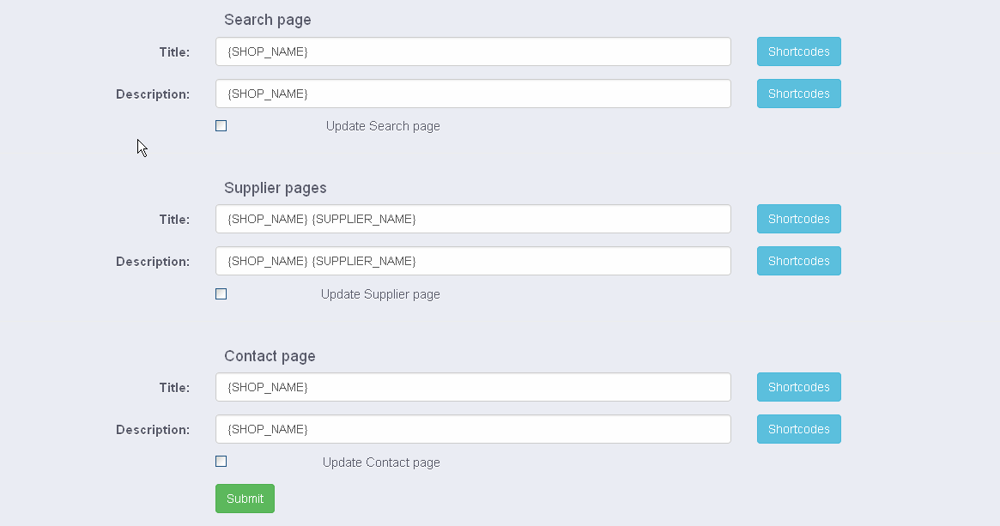
After editing the SEO fields , you should tick the checkboxes for all your items that you would like to update. Then click on the button "Submit" to save your changes.
Note : SEO manager will just update the SEO data with the checked box set, otherwise the new values will not be taken into account.
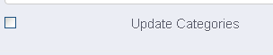
SEO Manager relies on many Prestashop variables (like "Shop Name","Product Name","Category Name"...etc) to help you to optimize SEO,the format is pretty much simple: the shortcode are with brackets "{ .....}". Please, click on the icon "Help" to find out more about the shortcodes that apply.
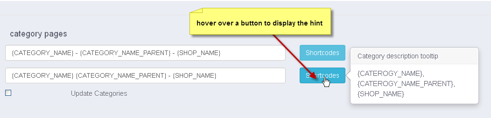
Please, use the language switch at the top left hand side of the form to select a language. The default language of SEO Manager is the actual language of your Prestashop web store.
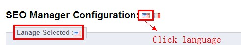
A video below is available on youtube at http://www.youtube.com/watch?v=DSV1EznfKSQ . Please select the HD quality video
E) System Requirements - top
Seo Manager is only compatible with Prestashop 1.5.x and Prestashop 1.6.0.x family product. It has been tested recently again against Prestashop 1.5.6.1, 1.6.0.9 and 1.6.0.11. Note: Prestashop did NOT release a public version 1.6.0.10
F) Package description - top
Your download package should include:
- A user documentation
- The Module file
- The video tutorial
- And the illustrations
A demo website is also available. Find out more at the item description page at Codecanyon.net
G) More information - top
We always wants to make sure that you are satisfied with your purchase. For support, ask your question in the product support link or you can contact us using the following ways.
Please don't forget to rate the item on codecanyon if you like our work.Once again, thank you so much for purchasing this addons. As I have already said, I'd be glad to help you if you have any questions relating to this item. If you have a more general question relating to the module, you might consider visiting the forums and asking your question in the "Item Discussion" section.